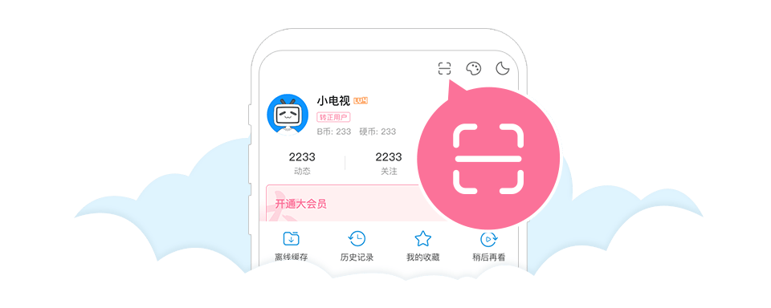

<!DOCTYPE html>
<html lang="en">

<head>
    <meta charset="UTF-8">
    <meta http-equiv="X-UA-Compatible" content="IE=edge">
    <meta name="viewport" content="width=device-width, initial-scale=1.0">
    <title>Document</title>
    <script src="js/vue.js"></script>
    <script src="js/jquery-3.1.0.min.js"></script>
    <script src="js/qrcode.js"></script>
</head>

<body>
    <div class="login-left">
        <div class="qrcode-login">
            <div class="qrcode-con">
                <div id="qrcode-box">

                    <!---->
                </div>
            </div>
            <div class="qrcode-footer">
                <p class="status-txt">{{statue}}</p>


                <p class="app-link" style="color: rgb(146, 146, 146);">请使用哔哩哔哩客户端<br>扫码登录<br>或扫码下载APP
                </p>
            </div>
        </div>

        <div class="tip">
            <!--  -->
        </div>
    </div>

</body>
<script>
    const qrLogin = new Vue({
        el: '.login-left',
        data: {
            statue: '扫描二维码登录',
            url: '',
            oauthkey: ''
        },
        mounted() {
            isLogin = false
            $.get({
                url: '/getLoginUrl',
                // data:{},
                success: function (resdata) {
                    qrLogin.oauthkey = resdata.oauthKey
                    url = resdata.url
                    // new QRCode(document.getElementById("qrcode-box"), url);
                    var qrcode = new QRCode(document.getElementById("qrcode-box"), {
                        text: url,
                        width: 128,
                        height: 128,
                        colorDark: "#000000",
                        colorLight: "#ffffff",
                        correctLevel: QRCode.CorrectLevel.L
                    });
                }

            })
            this.timer = setInterval(() => {
                if (!isLogin) {
                    $.get({
                        url: '/getLoginInfo',
                        data: { 'oauthkey': qrLogin.oauthkey },
                        success: function (resdata) {
                            qrLogin.statue = resdata.statue
                            isLogin = resdata.islogin
                        }
                    })
                }
                else{
                    window.location="/"
                }
            }, 1500)
        }
    })
</script>
<style>
    body {
        background-color: rgb(230, 230, 230);
    }

    .login-left {
        margin: 10px;
        background-color: white;
        border-radius: 15px;
        padding: 10px;
        height: 320px;
        box-shadow: 0 2px 5px 0 rgba(0, 0, 0, .1);
    }

    .tip {
        float: right;
    }

    #qrcode-box {
        margin-left: 175px;
        margin-top: 30px;
        position: absolute;
    }

    .qrcode-login {

        float: left;
    }

    .qrcode-footer {
        text-align: center;
        margin-top: 170px;
        width: 480px;
        height: 325px;
        background: url(pic/bili/2233login.png) no-repeat;
    }
</style>

</html>